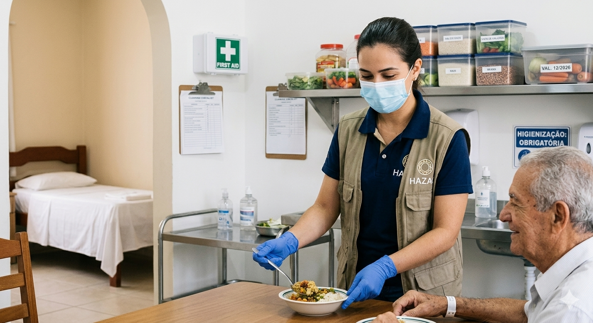

Protocolo de Segurança Biológica
A sanitariedade no Amparo HAZAQ não é apenas limpeza; é uma medida de proteção contra infecções e perigos invisíveis. O seminarista deve atuar como um inspetor rigoroso, garantindo que nenhum agente externo coloque em risco a saúde de idosos e crianças.
Equipamentos de Proteção (EPIs)
Luvas de Látex/Nitrílicas
Uso obrigatório no manuseio de alimentos, remédios, banhos ou contato com fluidos corporais. Devem ser descartadas após cada uso.
Máscaras Descartáveis
Essenciais em situações de gripe, manuseio direto de alimentos ou quando o seminarista/acolhido apresentar sintomas respiratórios.
Inspeção e Manutenção
Alimentos e Medicamentos
Verificação rigorosa da data de validade e integridade das embalagens. Alimentos com latas estufadas ou medicamentos sem identificação devem ser descartados imediatamente.
Higiene de Ambientes Críticos
Inspeção diária de sanitários, banheiros, quartos e camas. A limpeza deve ser profunda (químicos adequados) para evitar proliferação de fungos e bactérias. Talheres e pratos devem passar por higienização térmica ou química rigorosa.
Gestão de Riscos Externos
Dedetização Periódica
Monitoramento de pragas e vetores (insetos e roedores) que podem transmitir doenças graves em ambientes coletivos.
Perigo Físico
Avaliação constante de pisos escorregadios, quinas vivas e objetos cortantes que ofereçam risco de queda ou ferimento.
Atenção Seminarista:
Toda e qualquer situação que exponha o acolhido ou o seminarista ao perigo (ex: fios expostos, alimentos vencidos, falta de EPIs) deve ser reportada imediatamente no Diário de Bordo.